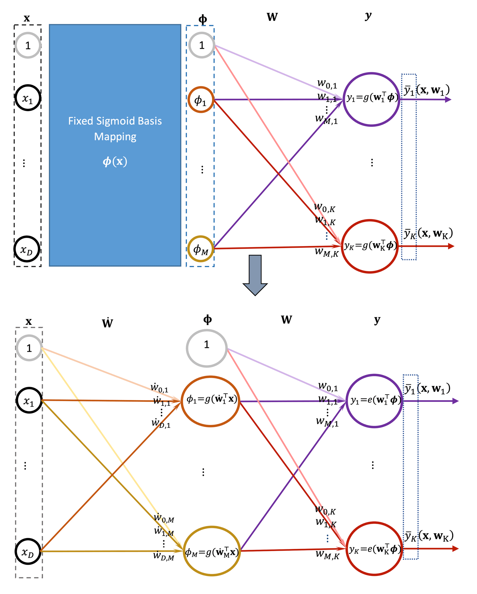
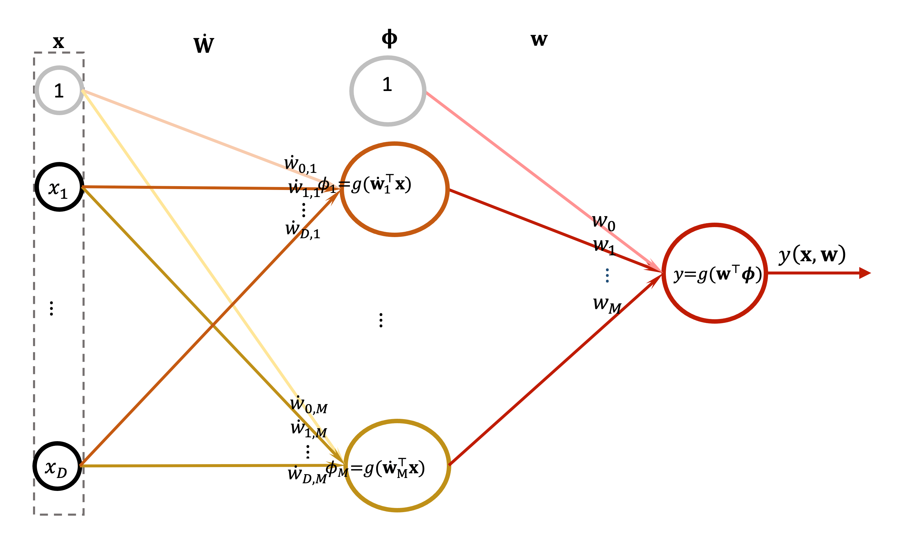

Non-linear models: multi-layer perceptron
Learning outcomes:
After completing this lesson you should be able to:
- understand the difference between logistic regression and a two layer neural network for classification
- appreciate the adaptivity of the features in neural networks as opposed to fixed basis architecture
- appreciate some of the strength and limitations of neural networks.
By now you might be thinking: Ok that was all about linearly separable classes-easy! But how about when the classes are non-linearly separable? In this case, we may need more than one line to separate the data or we might need curvy shaped boundaries to separate the classes. This is where multilayer perceptron comes in handy. But before we rush into this subject, bear in mind that similar to what we have said on linear regression with feature basis, all linear classification models such as perceptron and the logistic regression and the softmax regression can be combined with a feature space (as shown in the algorithms) and hence non-linearly separable classes can become linearly separable classes in a higher dimensional space. However, there are cases where this will not work and we need to move into more flexible features space, where best features are learned, instead of being fixed by the model designer. This will give us a lot of power in expressing an arbitrary decisions boundary, and this is the subject of this lesson.
When rectilinear or multiple lines boundaries are needed to separate the classes, we can employ multiple independent perceptrons but we will run into the issues that we mentioned earlier in previous section. It will be more convenient, however, if we can actually combine these perceptrons in one model that learns the overall best settings of these perceptron together as one comprehensive model and to harmonise and learn the set of parameters needed to identify these set of lines. Furthermore, the possibility of generating more elastic and curvy shaped boundaries is desirable.
The multilayer perceptron does exactly this. It allows us to connect multiple layers of linear and non-linear models together (these can be viewed as computational units that we call neurons–the circles- that we have seen for the perceptron and for the logistic regression). It should be noted however, that the name multilayer perceptron is a misnomer since what we are using in each layer is a logistic regression rather than a perceptron since we will use an activation function for each neuron. Nevertheless, the name is common and we will continue to use it. The key differences between the perceptron and logistics regression is in the activation function treatment, and as long as we are aware of that it should be fine.
Earlier in the regression unit we saw how to build a multi-layer model with activation function on the hidden unit, and how to conduct learning via the backpropagation on it. In this unit we will expand the model that we develop to have a non-linear activation function on the output layer as well. In particular, we use the softmax regression model due to its excellent ability of classifying multiple class problem.
Below we show a generalisation of the concept of moving from one multinomial logistic regression into multi-layer neural networks classifier.

Backpropagation propagates the error back through the network layers to adjust their weights in a backward manner. We saw how this worked for Algorithm 6''' in the regression unit. So, we need to know first how to adjust the final output to be favourable to our data and classes layout, and then we need to slowly adjust the lines so that this overall performance or ability to distinguish between the classes is increased slowly until it is optimised. This is the idea of stochastic gradient descent with backpropagation.
If we decide to run through all of our data first and formulate a total sum of adjustments that we will execute in one step, then we are talking about batch backpropagation algorithm. Regardless of how we train, the idea is simple: we generalise the concept of one perceptron into multiple ones that act together in harmony. The multi-layer perceptron is also called feedforward neural networks. In fact, it is the most common neural networks architecture, but there are plenty of other architectures that are possible. Some are recurrent neural networks: when we allow the network’s past output to participate also as a current input. You will study more about this fascinating topic in the Machine Learning and Deep Learning modules where you will employ automatic differentiation procedure instead of analytically reaching the gradient of the deeply hidden layers. Nevertheless, the complexity of obtaining the gradients for the hidden layers acts as a bridge to appreciate why we need automatic differentiation. It is sufficient to understand that fundamentally we need to take the derivatives and apply the chain rule to propagate the error back in the network.
Binary classification using neural network
We discuss a simple neural network architecture where we have only one output, i.e. a binary class problem. The network that is under consideration is expressed as follows:
where we used logistic function on both units, the hidden and the output. The architecture is shown in the figure below. The main difference between this and the regression that we discussed in Unit 4 is that the classification network uses a non-linear function on the output while for regression we used a linear activation function on the output.

Figure 5.44. Schematic representation of the multi-layer perceptron as a non-linear model with one output.
Essentially the above architecture is an extension of the logistic regression model. We now have a hidden layer that learns the best features representation instead of using non-adaptive, fixed set of basis functions that are decided by the model designer.
Our loss function is, as in the logistic regression case, the cross entropy and is given as:
We define:
We have two derivatives \(\nabla_{\mathbf{w}}\) and \(\nabla_{\dot{\mathbf{W}}}\) one with respect to each layer weights, for simplicity we will omit the subscript and suffice by showing the loss as a function of the weights that we are differentiating with respect to. The derivative with respect to the output layer is identical to what we saw earlier for the logistic regression model and is given as follows:
The main difference between this neural network architecture and the logistic regression architecture is the additional derivation of the hidden units updates. Similar to what we saw earlier in the logistic regression, the derivative of the loss with respect to the hidden units is given as:
Therefore, the update rule for the hidden layer can be deduced similar to what we had in regression by realising that \(g(\mathbf{X} \dot{\mathbf{W}})=\mathbf{\Phi}\) and its gradient is \(\nabla \boldsymbol{g}=\dot{\boldsymbol{\Phi}}=\mathbf{\Phi} \circ(\mathbf{1}-\mathbf{\Phi})\), where ∘ is element-wise matrix multiplication. In addition, the gradients for \(\mathbf{X} \dot{\mathbf{W}}\) are \(\nabla_{\dot{\mathbf{w}}}(\mathbf{X} \dot{\mathbf{W}})=\mathbf{X}^{\top}\) and \(\nabla_{\mathbf{\Phi}} \mathbf{\Phi} \mathbf{w}=\mathbf{w}^{\top}\). All of these elements are stitched together to form a backpropagated update for the hidden layer (via the chain rule of derivation).
There is an extra complexity associated with propagating the error back into previous layers. The deeper the error goes back, the more analytical overhead we have. Deep Learning (DL) has overcome these issues via few techniques and tricks. One of the important techniques employed by DL is automatic differentiation (AD). In AD the gradients of the loss with respect to early layers weights are calculated via built-in packages (algorithms) instead of inferring them analytically as we have briefly discussed in unit4. In addition, in order to overcome some of the difficulties of backpropagating the error, DL trains each layer separately and freezes the rest of the layers to be updated one layer at a time. Below you will experiment with a neural network architecture in scikit learn in order to appreciate their strength and limitation from a practical perspective.
Exercise
See the following Jupyter notebook for a comparison of the regularisation on neural networks.
- Download exercise (.ipynb): Exercise 5
Activity
Please see the following Jupyter notebook for comparison between different techniques for classification which wraps up most of material covered for classification in both unit 2 and unit 3.
- Download exercise (.ipynb): Exercise 6
Activity
See the following Jupyter notebook for a comprehensive example on comparing different classifiers performance.
- Download exercise (.ipynb): Exercise 7
Lesson summary
In this lesson we discussed the multi-layer perceptron, and we saw a simple example of an architecture that is suitable for binary classification. The architecture allows the network to adapt the features to the needs of the problem in hand. This solved the need to use a predefined set of fixed basis to map a non-linear classification model into a linear classification model.